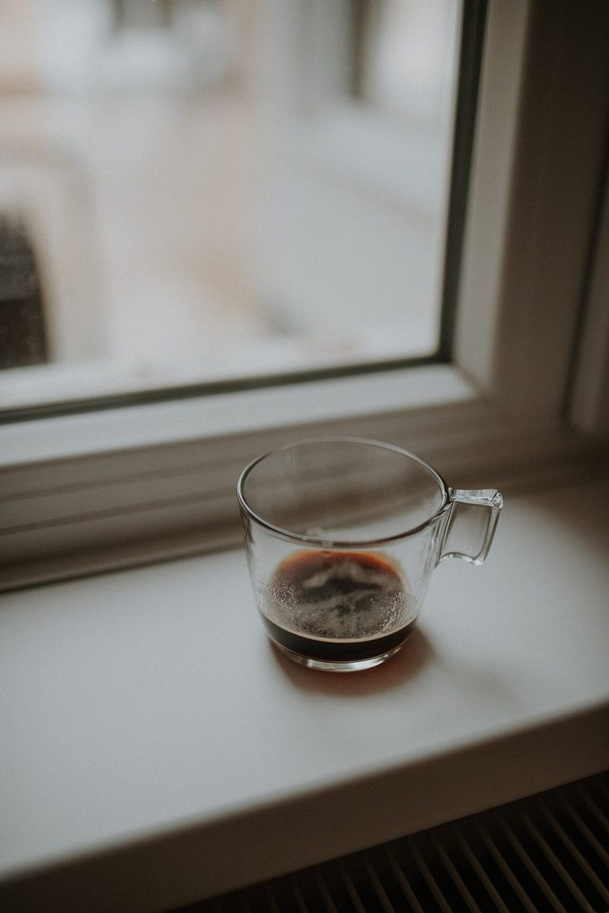

店のこと
店のこと
お店について確認できているのは、所在地とInstagramのアカウントだけです。
確認できていること
- 店名は「TADAPAN」、業種はパン屋
- 所在地は静岡県藤枝市高洲17-10
- 電話番号はなし。連絡はInstagramから
- 営業時間・定休日・メニュー・価格・ご予約・駐車場は準備中

想像してみる
朝の紙袋を思い浮かべて
ここから先は制作側の想像で、お店の実際の様子・考え・商品とは関係ありません。

袋を受け取って、窓の外の朝を見る。そんな場面を思い描きました。

袋の口を折ると、中身の香りが立つ。そんな想像です。

パンのもとになる麦の穂の写真を、袋の外側の風景として置きました。